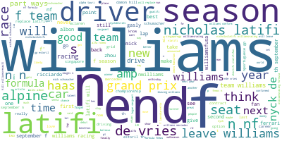

Code
import pandas as pd
import numpy as np
import matplotlib.pyplot as plt
import seaborn as sns
import nltk
from wordcloud import WordCloud, STOPWORDS
from PIL import Image
sns.set_theme(style="whitegrid", palette='Set2')import pandas as pd
import numpy as np
import matplotlib.pyplot as plt
import seaborn as sns
import nltk
from wordcloud import WordCloud, STOPWORDS
from PIL import Image
sns.set_theme(style="whitegrid", palette='Set2')df = pd.read_csv('../../data/02-model-data/data_cleaned.csv')driver_df = pd.read_csv('../../data/00-raw-data/drivers.csv')
df = pd.merge(df, driver_df[['driverId', 'driverRef']], on='driverId', how='left')
driver_df.rename(columns={'driverId':'pole_driverId'}, inplace=True)
df = pd.merge(df, driver_df[['pole_driverId', 'driverRef']], on='pole_driverId', how='left')
driver_df.rename(columns={'pole_driverId':'win_driverId'}, inplace=True)
df = pd.merge(df, driver_df[['win_driverId', 'driverRef']], on='win_driverId', how='left')
df.rename(columns={'driverRef_x':'driverRef', 'driverRef_y':'pole_driverRef', 'driverRef':'win_driverRef'}, inplace=True)
df.head()df.head()| season | round | season_round | driverId | raceId | circuitId | position | points | grid | laps | ... | cumulative_points | cumulative_laps | pole_driverId | pole_history | win_driverId | win_history | label | driverRef | pole_driverRef | win_driverRef | |
|---|---|---|---|---|---|---|---|---|---|---|---|---|---|---|---|---|---|---|---|---|---|
| 0 | 1950 | 1 | 1950_1 | 642 | 833 | 9 | 1 | 9.0 | 1 | 70 | ... | 9.0 | 70 | 642 | 1 | 642 | 1 | Podium | farina | farina | farina |
| 1 | 1950 | 1 | 1950_1 | 786 | 833 | 9 | 2 | 6.0 | 2 | 70 | ... | 6.0 | 70 | 642 | 0 | 642 | 0 | Podium | fagioli | farina | farina |
| 2 | 1950 | 1 | 1950_1 | 686 | 833 | 9 | 3 | 4.0 | 4 | 70 | ... | 4.0 | 70 | 642 | 0 | 642 | 0 | Podium | reg_parnell | farina | farina |
| 3 | 1950 | 1 | 1950_1 | 704 | 833 | 9 | 4 | 3.0 | 6 | 68 | ... | 3.0 | 68 | 642 | 0 | 642 | 0 | Top_10 | cabantous | farina | farina |
| 4 | 1950 | 1 | 1950_1 | 627 | 833 | 9 | 5 | 2.0 | 9 | 68 | ... | 2.0 | 68 | 642 | 0 | 642 | 0 | Top_10 | rosier | farina | farina |
5 rows × 25 columns
df.columnsIndex(['season', 'round', 'season_round', 'driverId', 'raceId', 'circuitId',
'position', 'points', 'grid', 'laps', 'status', 'constructorRef',
'weather', 'stop', 'age_on_race', 'cumulative_points',
'cumulative_laps', 'pole_driverId', 'pole_history', 'win_driverId',
'win_history', 'label', 'driverRef', 'pole_driverRef', 'win_driverRef'],
dtype='object')all_sentiment_df = pd.read_csv('../../data/01-modified-data/all_teams_sentiment_df.csv')grouped_df = all_sentiment_df.groupby(['Team', 'sentiment'], as_index = False)['0'].count() # Group by team and sentimentWhy data visualization is important?
General Types of Visualizations:
Advantages:
Disadvantages:
win_count_df = df[df['position'] == 1.0].groupby('driverRef', as_index=False)['position'].count()
win_count_df.sort_values(by = 'position', axis=0, ascending=False, inplace=True)
win_count_df_top10 = win_count_df.head(10)
max_points_df = df.groupby('driverRef', as_index=False)['points'].sum()
max_points_df.sort_values(by = 'points', axis=0, ascending=False, inplace=True)
max_points_df_top10 = max_points_df.head(10)fig, ax = plt.subplots(nrows=1, ncols=2 ,figsize = (18, 10))
sns.barplot(x = win_count_df_top10['driverRef'], y = win_count_df_top10['position'] , ax = ax[0])
sns.barplot(x = max_points_df_top10['driverRef'], y = max_points_df_top10['points'], ax = ax[1])
FS = 16
ax[1].set_xlabel('Driver', fontsize=FS)
ax[1].set_ylabel('Number of Points in Career', fontsize=FS)
ax[1].set_title('Top 10 Drivers with Most Points', fontsize=FS)
ax[1].set_xticklabels(ax[1].get_xticklabels(), rotation=45, horizontalalignment='right')
ax[0].set_xlabel('Driver', fontsize=FS)
ax[0].set_ylabel('Number of Wins in Career', fontsize=FS)
ax[0].set_title('Top 10 Drivers with Most Wins', fontsize=FS)
ax[0].set_xticklabels(ax[0].get_xticklabels(), rotation=45, horizontalalignment='right')
plt.savefig('../../501-project-website/images/visualizations/main_data/top10_drivers_wins_points.png')
plt.show()While Michael Schumacher has the more wins in his entire career than other drivers except Lewis Hamilton, he has lesser number of points as compares to them. By domain knowledge we also know that Schumacher was a part of F1 from the early 90s to 2004, which leads us to the conclusion the point distribution for getting wins has increased over the years. This strange behaviour may also mean that other drivers apart of Schumacher gained more points while not wining (positions 2-10 also has points).
c_win_count_df = df[df['position'] == 1.0].groupby('constructorRef', as_index=False)['position'].count()
c_win_count_df.sort_values(by = 'position', axis=0, ascending=False, inplace=True)
c_win_count_df_top10 = c_win_count_df.head(10)
c_max_points_df = df.groupby('constructorRef', as_index=False)['points'].sum()
c_max_points_df.sort_values(by = 'points', axis=0, ascending=False, inplace=True)
c_max_points_df_top10 = c_max_points_df.head(10)fig, ax = plt.subplots(nrows=1, ncols=2 ,figsize = (18, 10))
sns.barplot(x = c_win_count_df_top10['constructorRef'], y = c_win_count_df_top10['position'], ax=ax[0])
sns.barplot(x = c_max_points_df_top10['constructorRef'], y = c_max_points_df_top10['points'], ax=ax[1])
FS = 16
ax[1].set_xlabel('Constructor', fontsize=FS)
ax[1].set_ylabel('Number of Points', fontsize=FS)
ax[1].set_title('Top 10 Constructors with Most Points', fontsize=FS)
ax[1].set_xticklabels(ax[1].get_xticklabels(), rotation=45, horizontalalignment='right')
ax[0].set_xlabel('Constructor', fontsize=FS)
ax[0].set_ylabel('Number of Race Wins', fontsize=FS)
ax[0].set_title('Top 10 Constructors with Most Race Wins', fontsize=FS)
ax[0].set_xticklabels(ax[0].get_xticklabels(), rotation=45, horizontalalignment='right')
plt.savefig('../../501-project-website/images/visualizations/main_data/top10_constructor_wins_points.png')
plt.show()A team like McLaren has been in F1 since a very early time which justifies it being the second team while seeing race wins. But the points gathered for McLaren have been lesser in the past few years compared to before 2000. Since we already know the point distribution from being 1st in the race was less before 2000 and McLaren is now a mid-tier team it makes sense that it has less overall points despite being second in Race wins.
These 3 drivers are also called the big 3 of the newer generation. All of them are from rival teams and are rivals on track too. They went head-to-head in a lot of battles on track which makes me want to compare their points , win histories and laps races over the past seasons.
df1 = df[(df['driverRef'] == 'vettel') | (df['driverRef'] == 'hamilton') | (df['driverRef'] == 'alonso')]
df2 = df1[['season', 'round', 'driverRef', 'cumulative_points']]
df3 = df1[['season', 'round', 'driverRef', 'win_history']]
df4 = df1[['season', 'round', 'driverRef', 'cumulative_laps']]
df5 = df1.groupby(['season', 'driverRef'], as_index=False)['points'].sum()fig, ax = plt.subplots(nrows=2, ncols=2 ,figsize = (18, 10))
sns.lineplot(x = 'season', y = 'points', hue = 'driverRef', data = df5, ax=ax[0,0])
sns.lineplot(x = 'season', y = 'cumulative_points', hue = 'driverRef', data = df2, ax=ax[0,1])
sns.lineplot(x = 'season', y = 'win_history', hue = 'driverRef', data = df3, ax=ax[1,0])
sns.lineplot(x = 'season', y = 'cumulative_laps', hue = 'driverRef', data = df4, ax=ax[1,1])
plt.suptitle('Comparison of Vettel, Alonso and Hamilton Seasonwise', fontsize=16)Text(0.5, 0.98, 'Comparison of Vettel, Alonso and Hamilton Seasonwise')The number of points gained in each season for Alonso and Vettel peaked during 2011-2014 seasons while Hamilton peaked during 2017-2020. The downfall of Alonso resulted in the success of Hamiltion who became more succesful after 2013.
The 2021 season went down to the last race and resulted in a very close finish for World Driver’s Championship between Lewish Hamilton (2nd) and Max Verstappen (1st). The following section compares the points, laps completed and grid positions for all the races in the 2021 season.
df6 = df[(df['driverRef'] == 'max_verstappen') | (df['driverRef'] == 'hamilton')]
df6 = df6[df6['season'] == 2021]
df7 = df6[['round', 'driverRef', 'position']]
df8 = df6[['round', 'driverRef', 'points']]
df9 = df6[['round', 'driverRef', 'laps']]
df10 = df6[['round', 'driverRef', 'grid']]fig, ax = plt.subplots(nrows=2, ncols=2 ,figsize = (18, 10))
sns.lineplot(x = 'round', y = 'position', hue = 'driverRef', data = df7, ax=ax[0,0])
sns.lineplot(x = 'round', y = 'points', hue = 'driverRef', data = df8, ax=ax[0,1])
sns.lineplot(x = 'round', y = 'laps', hue = 'driverRef', data = df9, ax=ax[1,0])
sns.lineplot(x = 'round', y = 'grid', hue = 'driverRef', data = df10, ax=ax[1,1])
plt.suptitle('Comparison of Hamilton and Max for 2021 roundwise', fontsize=16)Text(0.5, 0.98, 'Comparison of Hamilton and Max for 2021 roundwise')Hamilton and Max waere pretty consistent in terms of win results and grid positions with a few exceptions.
df['pole_win'] = np.where((df['position'] == 1.0) & (df['grid'] == 1.0), 1, 0)
df11 = df['driverRef'][df['pole_win'] == 1]df12 = pd.merge(df.groupby('driverRef', as_index=False)['round'].count(), df.groupby('driverRef', as_index=False)['win_history'].max(), on='driverRef')
df12['win_percentage'] = df12['win_history']/df12['round']*100
df12.sort_values(by = 'win_percentage', axis=0, ascending=False, inplace=True)fig, ax = plt.subplots(nrows=2, ncols=1 ,figsize = (18, 23))
sns.barplot(x = df12[df12['round']>50].head(20)['driverRef'], y = df12[df12['round']>50].head(20)['win_percentage'], ax=ax[0])
sns.barplot(x = df11.value_counts().index[:20], y = df11.value_counts().values[:20], ax=ax[1])
ax[0].set_xticklabels(ax[0].get_xticklabels(), rotation=90, horizontalalignment='right')
ax[1].set_xticklabels(ax[1].get_xticklabels(), rotation=90, horizontalalignment='right')
ax[0].set_xlabel('Driver')
ax[0].set_ylabel('Win Percentage')
ax[0].set_title('Top 20 Drivers with Highest Win Percentage', fontsize=16)
ax[1].set_xlabel('Driver')
ax[1].set_ylabel('Number of Pole Wins')
ax[1].set_title('Top 20 Drivers with Most Pole Wins', fontsize=16)Text(0.5, 1.0, 'Top 20 Drivers with Most Pole Wins')fig, ax = plt.subplots(nrows=1, ncols=2 ,figsize = (18, 10))
ax[0].pie(df['label'].value_counts(), labels = df['label'].value_counts().index, autopct='%1.1f%%')
sns.countplot(x = 'label', data = df, ax=ax[1])
plt.suptitle('Distribution of Labels')Text(0.5, 0.98, 'Distribution of Labels')sns.pairplot(df[['position', 'points', 'laps', 'grid', 'label']], hue='label')<seaborn.axisgrid.PairGrid at 0x7fa44c99a9e0>teams = ['Ferrari', 'Mercedes', 'Redbull', 'Haas', 'Mclaren', 'Alpine', 'Williams', 'Aston Martin', 'Alpha Tauri', 'Alfa Romeo']
for team in teams:
indiv_df = grouped_df[grouped_df['Team'] == team]
indiv_df = indiv_df.rename(columns = {'0': 'Count'})
#indiv_df = indiv_df.pivot(index = 'Team', columns = 'sentiment', values = 'Count')
#display(indiv_df)
positive_percentage = (indiv_df[indiv_df['sentiment'] == 'positive']['Count'].values[0] / indiv_df['Count'].sum()) * 100
negative_percentage = (indiv_df[indiv_df['sentiment'] == 'negative']['Count'].values[0] / indiv_df['Count'].sum()) * 100
neutral_percentage = (indiv_df[indiv_df['sentiment'] == 'neutral']['Count'].values[0] / indiv_df['Count'].sum()) * 100
positive = indiv_df[indiv_df['sentiment'] == 'positive']['Count'].values[0]
negative = indiv_df[indiv_df['sentiment'] == 'negative']['Count'].values[0]
neutral = indiv_df[indiv_df['sentiment'] == 'neutral']['Count'].values[0]
labels = ["Positive", "Neutral","Negative"]
sizes = [positive, neutral, negative]
plt.pie(sizes, startangle=90, autopct='%1.1f%%')
plt.legend(labels)
plt.title("Sentiment Analysis Result for keyword=" + team)
plt.axis('equal')
plt.savefig('../../501-project-website/images/visualizations/sentiment_analysis/' + team + '_pie.png')
plt.show()def create_wordcloud(text):
#mask = np.array(Image.open("cloud.png"))
stopwords = set(STOPWORDS)
wc = WordCloud(background_color="white",
max_words=3000,
stopwords=stopwords,
repeat=True)
wc.generate(str(text))
wc.to_file("../../501-project-website/images/visualizations/sentiment_analysis/" + team + "_wordcloud.png")
path="../../501-project-website/images/visualizations/sentiment_analysis/" + team + "_wordcloud.png"
display(Image.open(path))
for team in teams:
indiv_df = all_sentiment_df[all_sentiment_df['Team'] == team]
create_wordcloud(indiv_df["text"].values)
sns.scatterplot(data = all_sentiment_df, x = 'polarity', y = 'subjectivity', hue = 'sentiment')
plt.title('Polarity vs Subjectivity Sentiment-wise', fontsize=16)
#plt.savefig('../../501-project-website/images/visualizations/sentiment_analysis/scatterplot_polarity_vs_subjectivity.png')
plt.show()fig, ax = plt.subplots(nrows=1, ncols=2 ,figsize = (18, 10))
sns.barplot(x = 'Team', y = 'polarity', data = all_sentiment_df, ax = ax[0])
sns.barplot(x = 'Team', y = 'subjectivity', data = all_sentiment_df, ax = ax[1])
FS = 18
ax[0].set_title('Team vs Polarity', fontsize = FS)
ax[1].set_title('Team vs Subjectivity', fontsize = FS)
ax[0].set_xlabel('Team', fontsize = FS)
ax[0].set_ylabel('Polarity', fontsize = FS)
ax[1].set_xlabel('Team', fontsize = FS)
ax[1].set_ylabel('Subjectivity', fontsize = FS)
ax[0].set_xticklabels(ax[0].get_xticklabels(), rotation=45, horizontalalignment='right')
ax[1].set_xticklabels(ax[1].get_xticklabels(), rotation=45, horizontalalignment='right')
#plt.savefig('../../501-project-website/images/visualizations/sentiment_analysis/Team_vs_Polarity_Subjectivity.png')
plt.show()